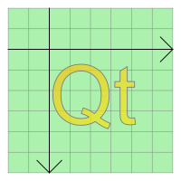

| Home · All Classes · Modules · QSS HELP · QSS 案例 · VER007 HOME |
该QGraphicsSimpleTextItem类提供了可以添加到一个简单的文本路径项QGraphicsScene。More...
该QGraphicsSimpleTextItem类提供了可以添加到一个简单的文本路径项QGraphicsScene。
要设置项的文本，你可以通过一个QString到QGraphicsSimpleTextItem的构造函数，或调用setText（ ）以后更改的文本。设置文本填充颜色，调用setBrush（ ） 。
简单的文字项目可以同时拥有一个填充和轮廓;setBrush（ ）将设置文本的填充（即，文本颜色） ，和setPen（ ）设置将用于绘制文本轮廓的画笔。 （后者可能会很慢，尤其是对于复杂的笔，并与长文本内容项目。 ）如果你想要的是绘制文本的简单的线条，你应该调用setBrush（ ）只，并保留笔未设置; QGraphicsSimpleTextItem的笔下是默认Qt.NoPen。
QGraphicsSimpleTextItem使用文本的格式大小和相关的字体提供合理的实施boundingRect（ ）shape（）和contains（ ） 。你可以通过调用设置字体setFont（ ） 。
QGraphicsSimpleText不显示丰富的文本，相反，你可以使用QGraphicsTextItem，它提供了全文的控制能力。

该parent的说法，如果不是没有，原因self通过Qt的，而不是PyQt的拥有。
该scene的说法，如果不是没有，原因self通过Qt的，而不是PyQt的拥有。
parent被传递给QGraphicsItem的构造。
See also QGraphicsScene.addItem（ ） 。
该parent的说法，如果不是没有，原因self通过Qt的，而不是PyQt的拥有。
该scene的说法，如果不是没有，原因self通过Qt的，而不是PyQt的拥有。
构造一个QGraphicsSimpleTextItem，使用text作为默认的纯文本。
parent被传递给QGraphicsItem的构造。
See also QGraphicsScene.addItem（ ） 。
从重新实现QGraphicsItem.boundingRect（ ） 。
从重新实现QGraphicsItem.contains（ ） 。
返回用于绘制该项目的文本的字体。
See also setFont（ ） 。
从重新实现QGraphicsItem.isObscuredBy（ ） 。
从重新实现QGraphicsItem.opaqueArea（ ） 。
从重新实现QGraphicsItem.paint（ ） 。
设置用于绘制项目的文本的字体font。
See also font（ ） 。
设置项的文本text。该文本将显示为纯文本。换行符（' \ n '） ，以及类型的字符QChar.LineSeparator会导致项目打破文本分成多行。
See also text（ ） 。
从重新实现QGraphicsItem.shape（ ） 。
返回项的文本。
See also setText（ ） 。
从重新实现QGraphicsItem.type（ ） 。
| PyQt 4.10.3 for X11 | Copyright © Riverbank Computing Ltd and Nokia 2012 | Qt 4.8.5 |